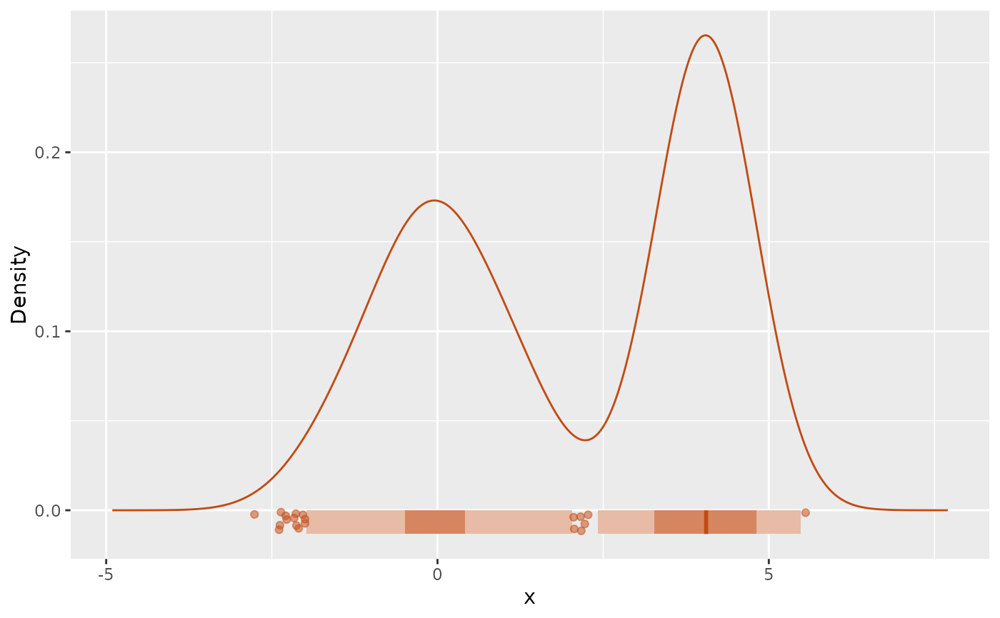
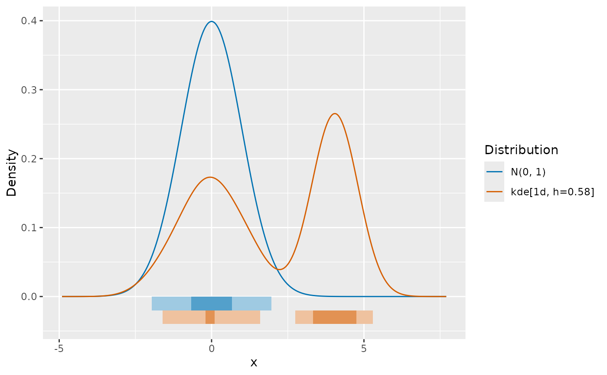
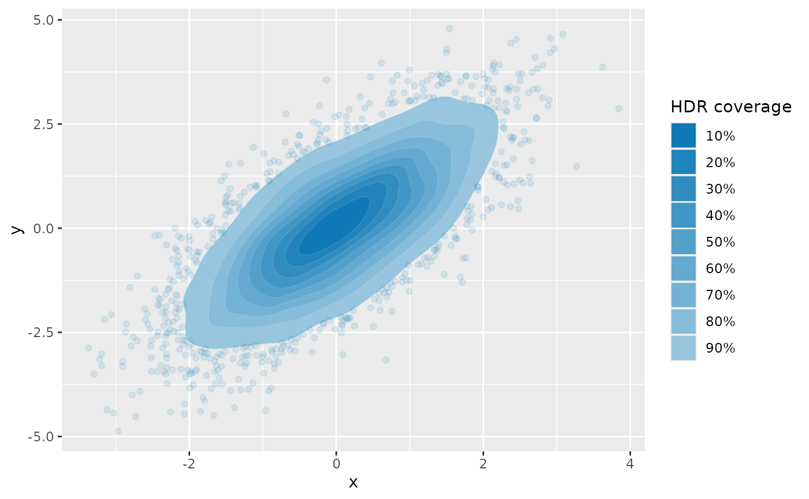

Produce ggplot of densities from distributional objects in 1 or 2 dimensions
Source:R/gg_density.R
gg_density.RdProduce ggplot of densities from distributional objects in 1 or 2 dimensions
Arguments
- object
distribution object from the distributional package or
dist_kde()- prob
Probability of the HDRs to be drawn.
- hdr
Character string describing how the HDRs are to be shown. Options are "none", "fill", "points" and "contours" (the latter only for bivariate plots). If
NULL, then "none" is used for univariate distributions and "contours" for bivariate.- show_points
If
TRUE, then individual observations are plotted.- show_mode
If
TRUE, then the mode of the distribution is shown as a point.- show_anomalies
If
TRUE, then the observations with surprisal probabilities less than 0.005 are shown in black.- colors
Color palette to use. If there are more than
length(colors)distributions, they are recycled. Default is the Okabe-Ito color palette.- alpha
Transparency of points. Ignored if
show_pointsisFALSE. Defaults to min(1, 500/n), where n is the number of observations plotted.- jitter
For univariate distributions, when
jitterisTRUEandshow_pointsis TRUE, a small amount of vertical jittering is applied to the observations. Ignored for bivariate distributions.- ngrid
Number of grid points to use for the density function.
Details
This function produces a ggplot of a density from a distributional object.
For univariate densities, it produces a line plot of the density function, with
an optional ribbon showing some highest density regions (HDRs) and/or the observations.
For bivariate densities, it produces ah HDR contour plot of the density function, with
the observations optionally shown as points.
The mode can also be drawn as a point.
The combination of hdr = "fill", show_points = TRUE,
show_mode = TRUE, and prob = c(0.5, 0.99) is equivalent to showing
HDR boxplots.
Examples
# Univariate densities
kde <- dist_kde(c(rnorm(500), rnorm(500, 4, .5)))
gg_density(kde,
hdr = "fill", prob = c(0.5, 0.95), color = "#c14b14",
show_mode = TRUE, show_points = TRUE, jitter = TRUE
)

c(dist_normal(), kde) |>
gg_density(hdr = "fill", prob = c(0.5, 0.95))

# Bivariate density
tibble(y1 = rnorm(5000), y2 = y1 + rnorm(5000)) |>
dist_kde() |>
gg_density(show_points = TRUE, alpha = 0.1, hdr = "fill")
